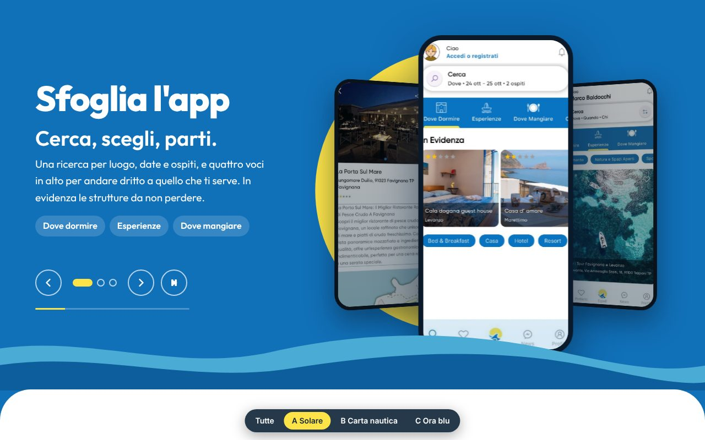
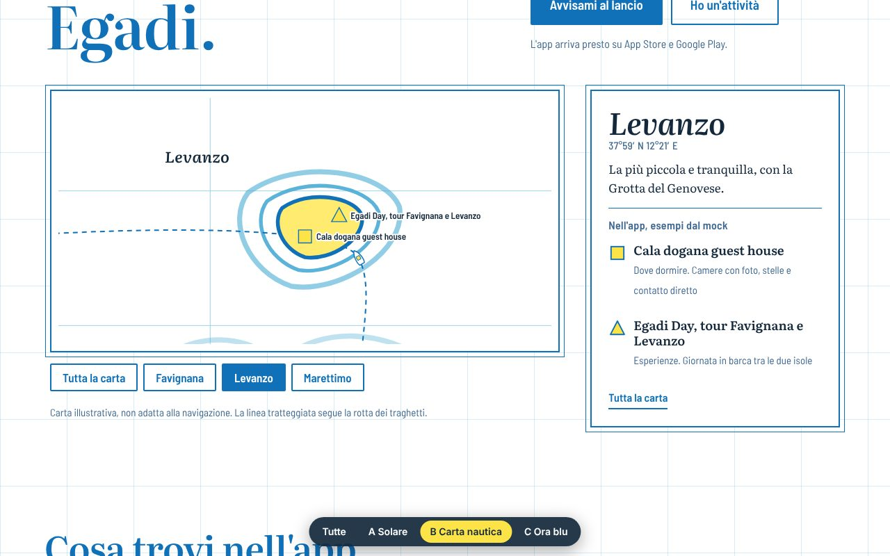
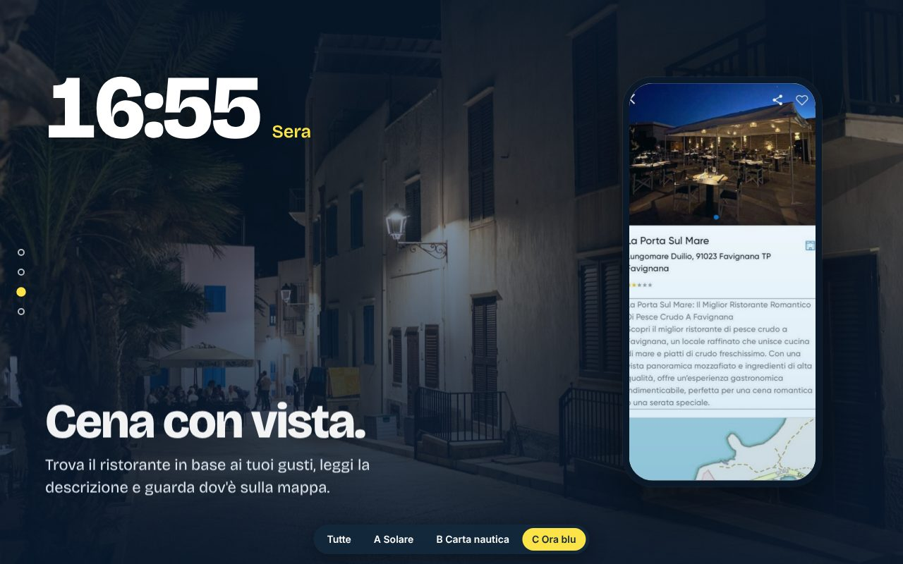

Tre proposte per il sito vetrina
Stessi contenuti, tre modi di raccontare le Egadi. Ogni proposta ha un'idea interattiva diversa: apri e prova a scorrere, cliccare e sfogliare. In basso trovi il selettore per passare dall'una all'altra.
-

A, Solare
Un carosello 3D animato sfoglia le schermate dell'app, con il sole e le onde del logo che si muovono a ogni passaggio. Calda e vicina allo stile dell'app.
Apri la proposta -

B, Carta nautica
Una carta delle Egadi da esplorare: tocca un'isola, la carta si avvicina, il traghetto parte da Trapani e compaiono le schede dell'app. Precisa e legata al territorio.
Apri la proposta -

C, Ora blu
Una giornata a Marettimo che si racconta scorrendo: l'orologio corre dall'alba alla notte, le foto cambiano e l'app mostra la schermata giusta. Emotiva e fotografica.
Apri la proposta
Bozze di lavoro. Foto, logo e schermate sono provvisori e il modulo email è dimostrativo.